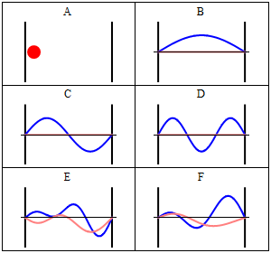

In quantum mechanics, the particle in a box model (also known as the infinite potential well or the infinite square well) describes the movement of a free particle in a small space surrounded by impenetrable barriers. The model is mainly used as a hypothetical example to illustrate the differences between classical and quantum systems.
In classical systems, for example, a particle trapped inside a large box can move at any speed within the box and is no more likely to be found at one position than another. However, when the well becomes very narrow (on the scale of a few nanometers), quantum effects become important. The particle may only occupy certain positive energy levels. Likewise, it can never have zero energy, meaning that the particle can never "sit still". Additionally, it is more likely to be found at certain positions than at others, depending on its energy level. The particle may never be detected at certain positions, known as spatial nodes.

The particle in a box model is one of the very few problems in quantum mechanics that can be solved analytically, without approximations. Due to its simplicity, the model allows insight into quantum effects without the need for complicated mathematics. It serves as a simple illustration of how energy quantizations (energy levels), which are found in more complicated quantum systems such as atoms and molecules, come about. It is one of the first quantum mechanics problems taught in undergraduate physics courses, and it is commonly used as an approximation for more complicated quantum systems.